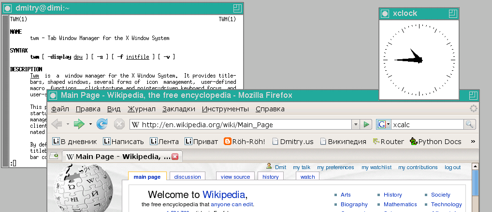
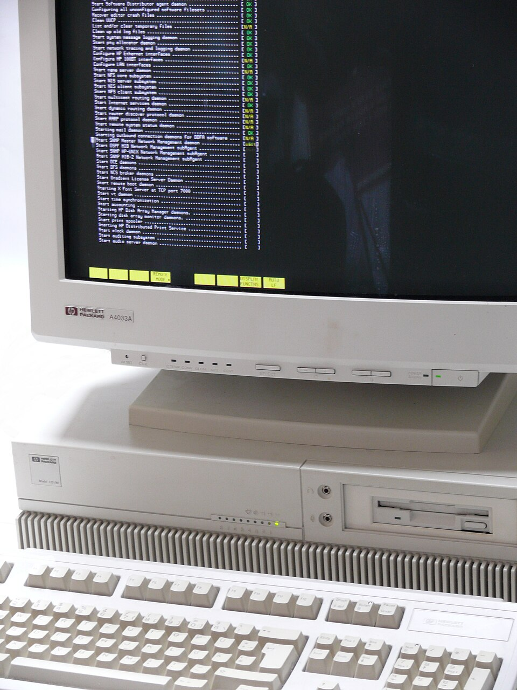

In this day and age, it takes a certain level of skill to be alien to technology and as everyone has computers in their pockets, the interactions with them is almost uncountable. However, these interactions are done through what is called a GUIGraphical User InterfaceGraphical User Interface. Devices running on Windows, MacOS, iOS, and Android all use this interface to interact with the user.
It must
be stressed as these visual components are all for the benefit of the user. While these greatly simplify
tasks like photo editing or video creation, some applications just completely omit the use of
GUIGraphical User InterfaceGraphical User Interface and instead use a simpler version of it called
CLICommand-Line InterfaceA software mechanism you use to interact with your operating system
using your keyboard. This is especially true for servers (...)
A server is a software or hardware offering
a service to a user, usually referred to as client. As an example, a hardware server is a
shared computer on a network, usually powerful and housed in a data centre., embedded
applications and in many other areas where either
One way we interact with these programs which don’t have a GUIGraphical User InterfaceGraphical User Interface is through the CLICommand-Line InterfaceA software mechanism you use to interact with your operating system using your keyboard. This is a text-based interface where the commands to execute are typed and all actions are shown as text on a terminal screen, whether it is updating a software or moving files around. The environment we use is called a shell, or command-line interpreter, and there are many shells out there. A list of Shells that can be encountered in industry and academia can be seen in Tbl. 3.1.
| UNIX | Windows |
Bourne shell (sh) |
COMMAND.COM, default in Windows 9x and provided for DOS compatibility in 32-bit versions of NT-based Windows via NTVDM. |
Almquist shell (ash) |
|
Debian Almquist shell (dash) |
|
Bash (Unix shell) (bash) |
|
Korn shell (ksh) |
cmd.exe, the default command-line interpreter of the Windows NT-family |
Z Shell (zsh) |
|
C shell (csh) | Recovery Console |
TENEX C shell (tcsh) | Windows PowerShell, based on .NET Framework |
Ch shell (ch) |
PowerShell, based on .NET Core |
Emacs shell (eshell) |
Hamilton C shell, a clone of the Unix C shell |
Friendly interactive shell (fish) |
|
Powershell (pwsh) |
4NT, a clone of CMD.EXE. |
rc shell (rc) |
Take Command, a newer incarnation of 4NT |
Stand-alone shell (sash) |
|
Scheme Shell (scsh) |
The command-line interpreter was one of the earliest ways of interacting with the general-purpose computer, starting in 1971 with the Thompson shell for UNIX (...) A family of multitasking, multi-user computer operating systems that derive from the original AT&T Unix, whose development started in 1969. It is considered one of the most groundbreaking software ever designed.. As UNIX evolved and came to be replaced in many capacities by Linux, the shell environments evolved and improved as well.
Bash, or the Bourne-again shell is one of the most widely-used shells and odds are, it’s the one to
be encountered in industry or in academic work. Bash is the shell that comes enabled by
default with most of the popular Linux distributions. It’s also available on macOS (...)
newer
versions have zsh shell instead but they are designed to be compatible. The author of this
work also uses zsh as his main driver. and in Windows with the Windows subsystem for
Linux.
In this document, Bash will be used. However, the reader is encouraged to explore some of the other shells out there once a working foundation in Bash is achieved.
twm, which features a TUI window for a man page, a shaped window (oclock) as well
as several iconified windows. On the lower hand of the image a website is shown inside a web browser. 
There are a few concepts and principles which needs to be understood to be a productive member of the CLICommand-Line InterfaceA software mechanism you use to interact with your operating system using your keyboard family. Before jumping into using commands though, let’s have a look at how command line statements are structured with the following:
This is the general form. The pattern is command, options, and then arguments. Here’s
a couple of common commands we’ll see with options and arguments that are used with
them.
The details of what the aforementioned commands do will be the focus in the future. The point here is to see the structure of what we’ll be working with before we get into what these actually do. Depending on the current action, we might just have a command, or a command and one or more options or just a command with one or more arguments.
Whatever is done in CLICommand-Line InterfaceA software mechanism you use to interact with your
operating system using your keyboard,
Command is the
To give command to a UNIX system, (...) or a UNIX-like system. type the name of the command, along with any associated information, such as a filename, and press Return.
The typed line is called the
- i.
- the command, (i.e.,
grep,sed,awk) - ii.
- options required by the command, (i.e.,
-i -e,s/hello/world/g,'{print $1}') - iii.
- the command’s arguments. (...)
This is optional as some commands just don’t have any options.
(i.e.,
filename.tex,file.f90,grades.csv)
Since the introduction of UNIX System V, Release 3 (released 1983), 
-
Command names must be between 2 and 9 characters in length,
-
Command names must be comprised of lowercase characters and digits,
-
Option names must be one character in length (i.e.,
-e,-i), -
All options are preceded by a hyphen,
-
Options without arguments may be grouped after the hyphen (i.e.,
-ie), -
The first option argument, following an option, must be preceded by white space. For example,
-o sfileis valid but-osfileis not. -
Option arguments are not optional, whereby if an option takes more than one argument, they must be separated by commas with no spaces, or if spaces are used the string must be included in double quotes. For example, both are acceptable:
-f past,now,nextand-f "past now next". -
All options must precede other arguments on the command line,
-
A double hyphen may be used to indicate the end of the option list,
-
The order of the options are order independent,
-
The order of arguments may be important,
-
A single hyphen means standard input.
Options